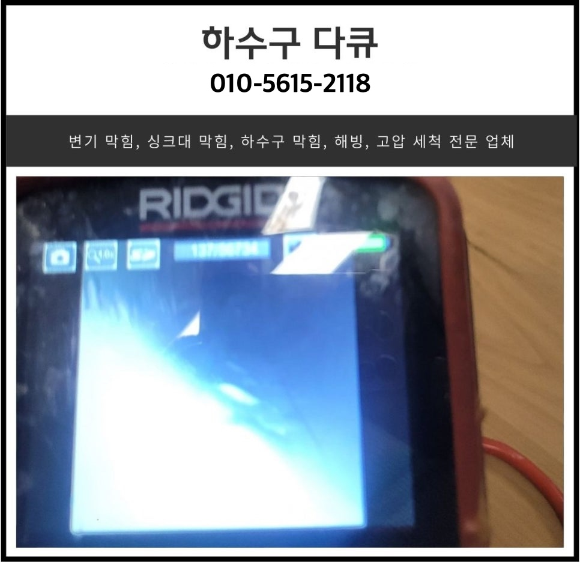
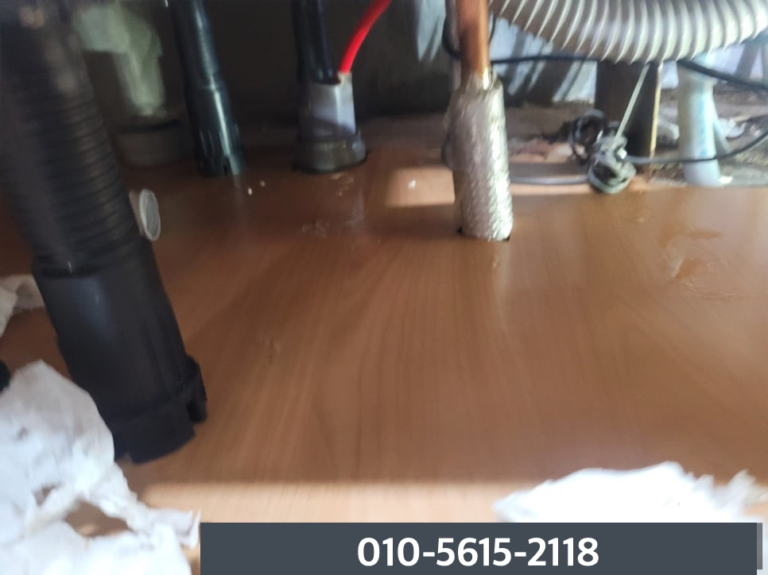
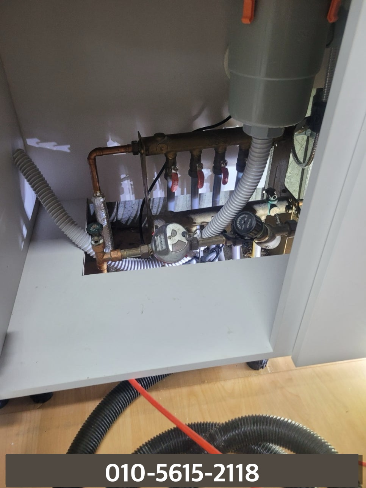
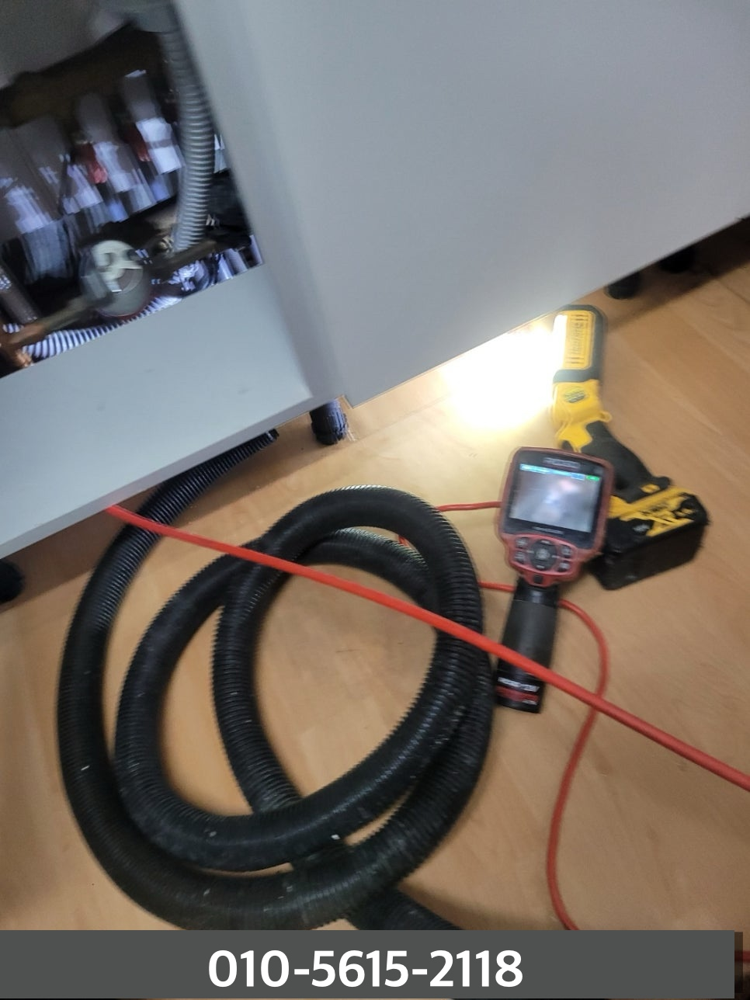
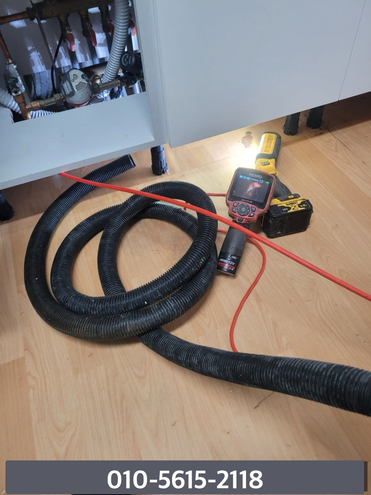
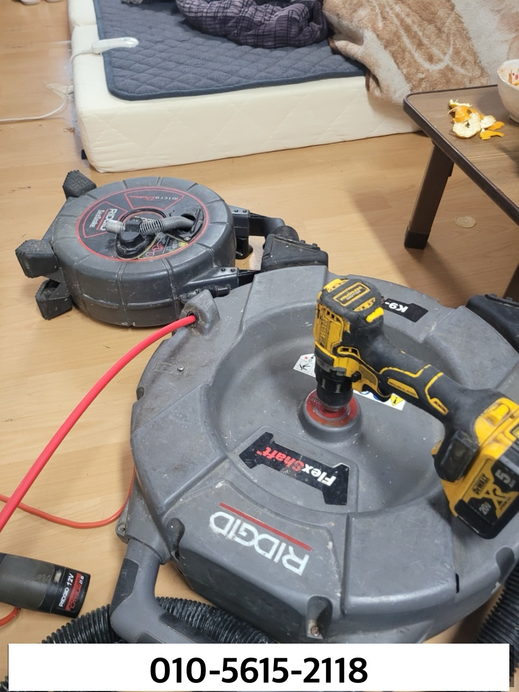
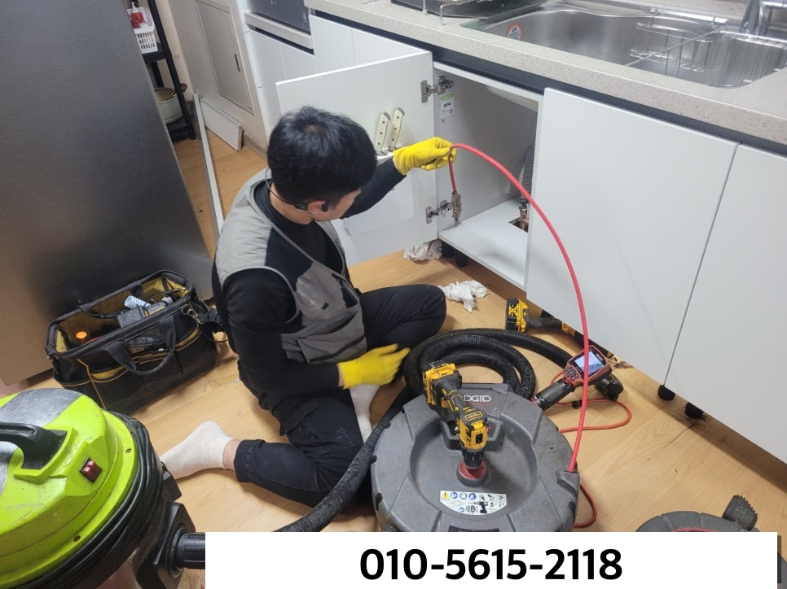

🏠 평택 도일동 주방 싱크대 막힘 송탄동 하수구 뚫는 전문 설비 업체
용인시 처인구 배관막힘 전문 시공 후기

📋 작업 개요
- 위치: 용인시 처인구, 수원시 영통구, 화성시 동탄
- 서비스 유형: 배관막힘, 내시경점검
- 작업 일시:
- 업체명: 하수구수사대 (010-5615-2118)
🔍 문제 상황
안녕하세요
평택 도일동 주방 싱크대 막힘, 송탄동 하수구 뚫는 전문 설비 업체 하수구 다큐입니다.
평택 도일동 주방 싱크대 막힘이 발생하게 되면 아무래도 주부님들께서 가장 많이 불편을 겪게 됩니다.
평택 도일동 주방 싱크대 막힘으로 인해, 사용한 주방을 정리할 수도 없게 되면서 집안이 어수선해 보일 뿐 아니라, 악취까지 동반하다 보니 빠르게 해결하기 위해 전문 설비 업체를 알아보시는데요.
네이버에서 쉽게 찾아볼 수 있는 수많은 송탄동 하수구 뚫는 전문 설비 업체들 중에서 정말 일 잘하는 업체를 선정하기는 쉽지 않습니다.
그러다 보니 많은 주부님들께서 지역 카페를 통해 업체를 알아보시거나, 주변 지인들의 소개를 통해 업체를 선정하시는 경우가 많아요.
오늘 하수구 다큐가 다녀온 현장 역시 지인분의 소개를 받아 연락 주신 고객님인데요.
사진을 함께 보면서 하수구 막힘을 해결하는 과정을 살펴보겠습니다.

🔎 원인 분석
💡 전문가 진단: 정밀 진단 장비를 사용하여 슬러지의 고착 여부를 판명하고 타격/세척 작업을 실시했습니다.
송탄동 하수구 뚫는 전문 설비 업체 하수구 다큐가 연락을 받고 도착한 곳은 아파트였어요.
6개월 전쯤 앞집에 방문해 싱크대 막힘을 해결해 드린 기억이 나서 반가웠는데요.
알고 보니 앞집과 친분이 있으신 고객님께서 소개를 받아 연락을 주셨습니다.
신속하게 현장에 도착해 주방을 살펴보니 전화통화하면서 말씀해 주신 대로 주방 바닥으로 물이 역류하는 상태였습니다.
역류한 물을 휴지와 걸레를 이용해 닦아주고 계셨던 터라 빠르게 석션을 세팅해서 제거하는 작업을 진행해 드렸어요.
바닥으로 역류한 물과 이물질을 석션을 사용해서 제거해 준 다음 내시경 카메라를 진입시켜 배관 내부를 점검해 보기로 했습니다.
내시경 카메라로 살펴본 배관의 내부는 싱크대 역류가 왜 발생했는지 어렵지 않게 알 수 있었습니다.
내부에 기름 슬러지와 각종 이물질이 정말 많이 쌓여있는 상태였어요.

🔧 작업 과정
워낙 오래된 아파트이다 보니 그동안 싱크대에서 흘려보낸 기름성분이 음식물 찌꺼기와 뒤엉켜 만들어진 기름 슬러지와 각종 이물질이 쌓여있었고, 하수구 다큐가 직접 물을 틀어 테스트해 보니 처음엔 배수가 되는 듯 보였지만, 얼마 지나지 않아 역류하는 것을 확인할 수 있었습니다.
우선 테스트를 진행하면서 흘려보낸 물과 배관 내부에 떠다니는 이물질들을 석션을 사용해 제거하는 작업을 진행해 준 다음 플렉스 샤프트 장비를 이용해 배관 청소를 진행하기로 했습니다.
송탄동 하수구 뚫는 전문 설비업체 하수구 다큐의 경우 고객님께 배관의 상태와 작업 방향에 대해 설명해 드린 다음 고객님께서 오케이 하시면 작업을 진행해 드리고 있어요.
아무래도 배관의 상태, 작업하는 장비 등에 따라 발생되는 비용이 다르다 보니 어떤 현장이던 정확한 안내를 하고 작업을 하고 있습니다.
플렉스 샤프트 장비는 오랜 시간 배관 벽면에 붙어서 굳어있던 기름 슬러지를 타격해 깨끗하게 만들어주는 역할을 합니다.
그러다 보니 작업을 진행하면 할수록 점점 깨끗해지는 배관을 바로 확인할 수 있어요.
정말 오래된 기름 슬러지는 딱딱하게 굳어있지만, 생겨난지 오래되지 않은 기름 슬러지의 경우 진흙처럼 끈적거리는데요.
이런 경우 노즐 끝에 달린 체인에 걸려 나오거나, 뭉쳐져 있는 기름 슬러지를 조각내어 제거하는 역할을 하게 됩니다.
이번 현장의 경우 주방은 몹시 깔끔하지만 워낙 오래된 아파트이다 보니 배관 내부에 쌓인 이물질을 모두 제거하는 게 쉽지 않았어요.
하지만 하수구 다큐는 포기하지 않고 반복적으로 작업을 진행해서 이물질을 모두 제거해 드렸습니다.
마지막으로 많은 양의 물을 싱크볼에 담은 뒤 한 번에 흘려보내면서 배관에 문제는 없는지, 하수구 막힘이나 역류는 발생되지 않는지 꼼꼼하게 체크해 드리고 문제가 없는 것을 확인한 뒤 마무리할 수 있었습니다.
싱크대 막힘은 우리 주변에서 흔히 발생하는 일중 하나입니다.


✅ 작업 완료
하지만 갑자기 싱크대 막힘이 발생하게 되면 당황스러울 수밖에 없는데요.
정확하게 문제를 파악해서 확실하게 뚫어드리겠습니다.
고민하지 마시고 연락 주세요.
경기도 평택시 고덕중앙로 322 4층 129호




⚠️ 하수구 배관 막힘 예방 및 관리 가이드
- ✅ 머리카락, 비닐, 물티슈 등 물에 분해되지 않는 이물질은 절대 흘려보내지 마세요.
- ✅ 기름기 많은 식기는 설거지 전 키친타올로 먼저 기름때를 닦아내세요.
- ✅ 주기적으로 배수구에 뜨거운 물을 가득 부어주어 유지방 고착을 방지하세요.
- ✅ 작업 후 1년 이내 재발 시 무상 A/S 보증 서비스를 제공합니다.
💡 핵심 정리
- 확실한 장비 작업(내시경 점검 및 샤프트 스케일링)으로 원인을 뿌리 뽑습니다.
- 작업 후 1년 이내에 동일한 부위 재발 시 100% 무상 A/S 서비스를 보장합니다.
- 서울 · 경기 · 인천 전 지역에 24시간 언제든 긴급 출동할 수 있도록 항시 대기 중입니다.
❓ 자주 묻는 질문 (FAQ)
🚨 용인시 처인구 배관막힘 문제로 고민이신가요?
정확한 원인 진단과 확실한 시공으로 재발 없는 해결을 약속드립니다.
24시간 긴급 출동 | 서울 · 경기 · 인천 전지역 | 1년 내 재발 시 무상 A/S